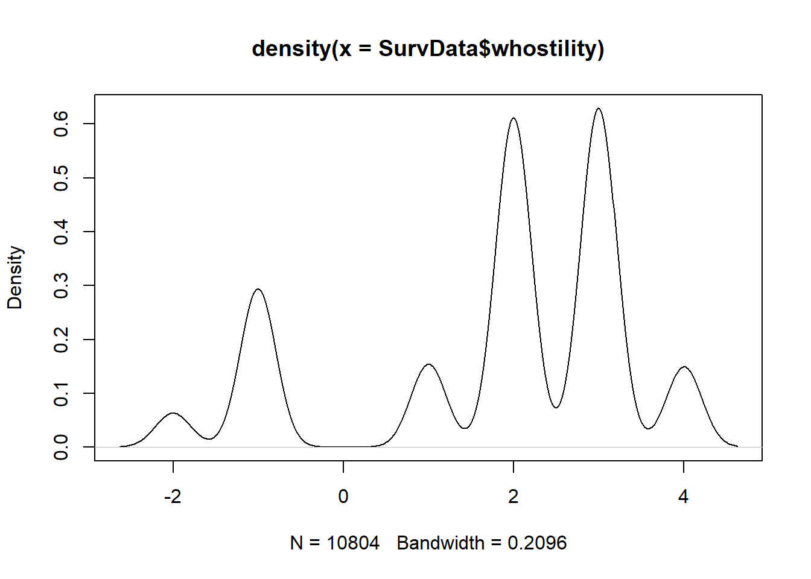
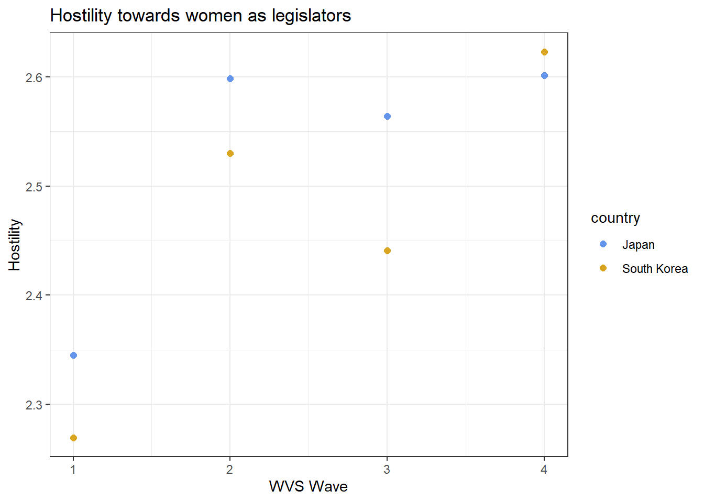
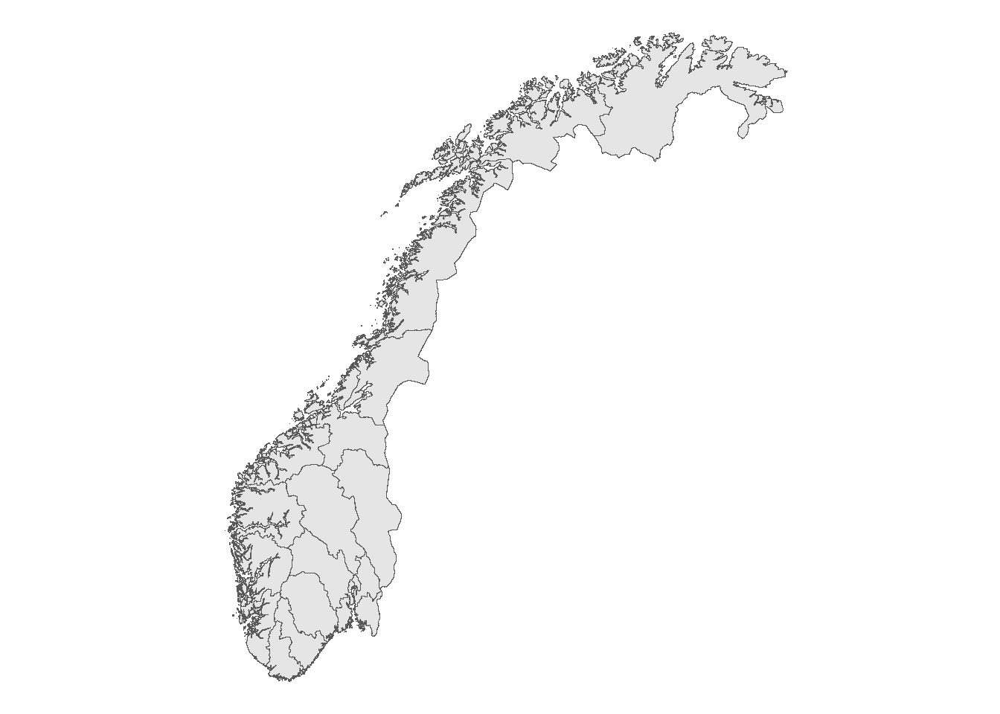

Welcome to a (more or less) thorough walkthrough of R in applied areas. Covers the sections: General Structure, Data import, Simple Data checking, Data Wrangling, Plotting, and advanced R methods.
General structure
Data Types
Information takes several forms in R, all attached with a class, the basic forms of data that needs to be known are numeric (will appear as “double” sometimes, this is related to memory allocation, but just means more decimals numeric), integer (whole numbers), factor (text but with numbers assigned to certain values), character, and boolean (logical, true or false). Additionally there are a class of missing values, but they are all covered by NA.
1+1### Comments are in hashtags
[1] 2
"hello"## Strings or characters
[1] "hello"
NA
[1] NA
## NA can also have type specific values, but these are *never* usedNA_character_
[1] NA
NA_complex_## All yield same output
[1] NA
## Boolean datasTRUE
[1] TRUE
FALSE
[1] FALSE
All entries in a script (which is just a text file), are sent to the console which interprets the text. There are also certain special datatypes, such as NULL for empty (which is not the same as missing), Inf for infinite values (dividing by zero for instance), and NaN (Not a Number, errors in certain computational processes)
Assignment
While strictly speaking a functional programming language, object oriented programming is highly supported, and the norm for usage amongst data scientists. Most outputs in the language will be assigned a name, and appear in the global environment (in one of the other windows in your RStudio IDE). This is done either with a = or (more commonly, due to specific interactions with an equals sign) with the <- known as the assignment operator.
hello <-23hello ## Calling the object prints the content by default
[1] 23
Other operators
Other operators become important when discussing logical tests or other mathematical operations.
+, -, /, *, ^ all does what you would expect
== Strict logical test, is this equal to the other thing, response in boolean
!= Strict anti-logical test, is this thing different to the other thing, response in boolean
<, >, <=, >=, less than, larger than, less or equal than, larger or equal than, logical tests, returns boolean
&, |, Binding operators for more logical tests & (AND operator) requires both elements to be true, while | (OR operator) requires only one to be true
%in% Contained logical test, is there a unit in this other element which is strictly equal to the first thing.
"Yes"=="Yes"
[1] TRUE
"Yes"=="No"
[1] FALSE
"Yes"!="Yes"
[1] FALSE
"Yes"!="No"
[1] TRUE
"Yes"%in%c("No", "no", "Maybe", "Yes")
[1] TRUE
Vectors
All complex data of interest to us in R is either a vector, a list or a dataframe (Matrix and Arrays exist, but are not relevant to this scope). Vectors are uni-dimensional with strict same type requirement, dataframes are two-dimensional, and lists are uni-dimensionals with no requirement for consistency among entries.
# Vectora_vector <-c(1, 3, 5, 6, 7,1)
All dimensional datatypes can be indexed using brackets, to call individual elements of the object
a_vector[4] ## Fourth number of the vector above
[1] 6
Dataframes
Two dimensional data structures are referred to as dataframes, and consists of rows of units across columns of variables. Columns are essentially vectors, and must therefore be of the same type. Indexing is done using brackets, and has to be separated with a comma, first number is the rownumber, second is the column number. Empty spaces extracts the whole row/column.
names age fav_movie happy
1 Gard 27 The Adolescence of Utena FALSE
df_example[c(1,2),]
names age fav_movie happy
1 Gard 27 The Adolescence of Utena FALSE
2 Grad 23 12 Angry Men TRUE
df_example[,1]
[1] "Gard" "Grad" "Gard Olav"
[4] "the Notorious G.A.R.D."
df_example[,1:2]
names age
1 Gard 27
2 Grad 23
3 Gard Olav 21
4 the Notorious G.A.R.D. 19
df_example[3,2]
[1] 21
## Selecting on namesdf_example[,c("fav_movie")]
[1] "The Adolescence of Utena" "12 Angry Men"
[3] "Inception" "Straight outta Compton"
## Index tooldf_example$age
[1] 27 23 21 19
df_example$happy
[1] FALSE TRUE FALSE TRUE
Lists
Lists can have anything in them, even dataframes or vectors, with no rules as to consistency over elements. Elements are then stored unidimensionally, accessed with double brackets for a relevant element.
ex_list <-list(df_example, a_vector)ex_list[[2]]
[1] 1 3 5 6 7 1
Lists are not often used in our branch of datascience, but will appear as accidental outputs to certain functions and processes, so its good to know what they are.
Functions
Functions are, the single most important aspect that exists in R, they are not commands, this ain’t stata. Understanding the universe of functions afforded to you through a multitude of packages is the key to conducting efficient data processing in R.
A function has the general form of function_name(argument_1, argument_2, ... argument_n). All functions have clearly defined arguments, which control the outcome of the function. What these arguments are, are specified in the help file, which can be called upon by typing ?function in the console. Sometimes these arguments are data oriented, the first argument in many tidyverse functions for instance, is a dataframe. Others are control oriented, meaning that they control specifications of the function itself. The function mean() for instance, takes three primary arguments, one is a vector of numbers (it also strictly only accepts dataypes that can be interpreted as numbers, so no character means), the second is a trim value, which is set to trim certain percentages of each side of the numerical distribution. Finally there is a na.rm argument, which controls whether or not to remove missing values before computing, if not done, a vector with missing values will return an error from the function.
mean(a_vector)
[1] 3.833333
mean(a_vector, trim = .2)
[1] 3.75
new_vector <-c(1,3,5,6,7,3,NA)mean(new_vector)
[1] NA
mean(new_vector, na.rm =TRUE)
[1] 4.166667
Simple Analysis
Before you can use R to conduct data wrangling or very directed plotting, you should utilize some functions to explore the data you are interested in. In this section I will utilize a singular dataset to demonstrate some of the simpler data exploring techniques.
First thing to address is data import. Based on the type of data applied, you utilize a particular function, usually found in the haven package, or just in base R. The most common datatypes are .csv for comma separated files, .xlsx files for excel (lots of strange things can happen when reading these files, be mindful), .sav for stata files, additionally, R has a set of unique filetypes that are relevant, .rda, .rds, and .rdata, .rda and .rdata are loaded with a simple load function, while .rds is read using a readRDS function. Each has an appropriate function for reading the relevant data. I load in a compiled set from WVS from South Korea and Japan here.
## Note the file path specification is also very specific. Two dots signal## a directory above your current. So this data is found in ## the parallell folder MA thesis, which is parallell to the folder two layers## above the current directory, then with a specified path to find it.load("../../MA thesis/Data and R scripts/Survey Data/SurvData.Rdata")
Simple data structure functions
For simple sakes, we can explore the structure of the dataset through just clicking on it in the global environment, the same effect can be achieved by using the view function, either in the console or in the script (but it can get annoying when re-running it inside the script). For a more systematized view of the data, the head, str, and summary functions are often used. Try them on your own data, but I will utilize head here, because it looks the best in this type of document.
head(SurvData)
gender PartyMember PolDisc year interest whostility voted country
1 1 3 3 1995 3 2 NA Japan
2 2 3 3 1995 3 3 NA Japan
3 2 3 3 1995 3 2 NA Japan
4 2 3 2 1995 2 3 NA Japan
5 2 3 3 1995 4 -1 NA Japan
6 2 3 3 1995 3 2 NA Japan
This dataset is clearly already been processed a bit, since a WVS would probably have far more variables. But for now we can tell that there are a set of variables that could interest us. I often recheck the precise names by calling the names function, which just prints out the names of the columns in the dataset. When specifying columns in tidyverse functions this can be a helpful reminder.
This is all on an overview level, to give you an idea of what the data looks like and how to further explore it. When it comes to familiarizing yourself with aspects of the dataset, the $ sign for indexing columns becomes helpful. I usually pair this with a table function, or a summary function, which gives me an idea of what the distribution looks like. For simple interaction exploration, table also accepts several variables so you can see where they overlap
summary(SurvData$gender)
Min. 1st Qu. Median Mean 3rd Qu. Max.
1.000 1.000 2.000 1.517 2.000 2.000
Transforming data is best done through the tidyverse system. The most key aspect of this framework is the usage of the pipe operator %>%, which takes the output from whatever is in front of the pipe, and gives it as the first argument in the function following the pipe (As a sidenote, if you want to call the preceeding object again, you can use a . to put it more places). Tidyverse allows for many useful simplifications, such as selecting columns by names without complex indexing or name wrapping. In this section I will use the dataset previously outlined in the section on simple analysis. I will go through the most common data wrangling functions that I use in my processes.
library(tidyverse)
Mutating
Mutate is the dplyr function for changing variables in a dataset. This means that the function can both create and modify existing variables in the dataset. As we saw in the last structure of our dataset, the gender variable is operationalized as 1 for men and 2 for women, we usually prefer a binary for this, so let us change that variable in a new dataset. Note that variable selecting in tidyverse functions are often quite straightforward, most if not all functions can specify variables by just writing them out in plain text as seen below.
SurvData <- SurvData %>%mutate(gender_subtracted = gender -1)## Lets compare the outputs to ensure successful transformationtable(SurvData$gender, SurvData$gender_subtracted)
0 1
1 5219 0
2 0 5585
table(SurvData$country)
Japan South Korea
5955 4849
Ifelse and Case when mutations
One of the most common techniques for assigning new values, other than just committing straight mathematical operations on them, is to utilize a logical test to assign new values. The most simple way of doing this is the ifelse function. It, simply put, tests each element of a vector and then assigns a new value based on TRUE or FALSE response, the syntax is as follows ifelse(logicaltest, value_if_TRUE, value_if_FALSE). If for instance we wanted the new gender variable to be a character based on gender we could do the following.
This is doable for instances where the new variable is dichotomous, and while it is possible to put a second ifelse function inside the response for the results of the logical test, this can get extremely cluttered as several cases appear. Which is why the dplyr package, helpfully has the case_when function, which is a vectorized version of ifelse, the helpfile will even say so. case_when has a bit more complex of a syntax, where the logical test is followed by a ~ and then the assigned value, with commas separating all cases.
If you have a long set of variables you want to do the same thing to, the across selection function can be very helpful. When used within a mutate function it can apply the same function unto several columns.
Across can also be extended with anonymous functions (that is technically what is being done behind the scenes), which I will cover later in the document.
Filtering
The second common thing to do when treating data is to filter it, keeping only certain observations. Again you would use a logical test in order to filter these things, so get used to writing these sorts of tests. I showed earlier that the data had two countries, lets make a new dataframe with only Japan. Note also that this function will remove lines, and as such, you should not overwrite the old dataframe when filtering, like I did in the mutate section.
jap_surv <- SurvData %>%filter(country =="Japan")
We can add more tests to filter it further, either with a binding logical operator, or a comma, but comma adds strict additional requirement.
The most common iteration of joining is the left_join function. This joins a secondary dataset to the left of the first dataset. In order to join the datasets you must specify a set of “keys”, a set of variables which the values in the left dataset is supposed to match to the right dataset.
Grouping and Aggregating
A common need is also to use lower level data to create data on summaries of aggregate level, like the average level of women respondents across the survey years. This also has a slightly complex syntax, but you first group the dataframe with the function group_by, which specifies a set of variables that units should be grouped into, and then feed that into the summarise (summarize works too for americans) function, which specifies the new variables you want to create on the aggregate level. These new variables need to be specified by functions that summarise elements however, such as mean. In this code I will make an aggregate of Japan and South Korea over the time periods, with the number of respondents in each, and the average degree of anti-women legislator sentiment.
grouped_f <- SurvData %>%mutate(whostility =ifelse(whostility <0, NA, whostility)) %>%# You can add the unchanged vector as a responsein an ifelse, Values less than 0 are missing categories in WVSgroup_by(country, year) %>%summarise(respondents =n(),whostility =mean(whostility, na.rm =TRUE))
Pivoting
Plotting
To paraphrase the Beatles, all you need is ggplot. This framework allows you to plot essentially everything, although some packages obviously makes this plotting simpler, but most of them are just wrappers for ggplot code. You could write entire books worth of information on plotting with ggplot. In fact someone did, I have it if you’re interested.
neat book
Layers
It is prudent to think of visualisations in ggplot as layered. These layers are bound together with plus signs, and each construct a layer ontop of the plot or other visualisation you want to make. The most basic general layer that all ggplots need is the base layer of the ggplot function itself. In this function you specify your dataset, and the general aesthetics. Within the ggplot function (and most geom_ derivatives) there is an aes argument, this is an aesthetic argument, it specifies what variable from the dataset should represent what element of the plot. Based on the plot type the type of aesthetic accepted varies, but a list of potential aesthetics are: x, y, color, fill, shape, size, linewidth, linetype, etc. Following this, you add a layer that specifies what type of plot you want, this is done through a family of geom_ functions such as geom_point for scatterplot, geom_bar for a barplot, geom_boxplot for a boxplot with distributions, etc. Which you use depends on how you want to visualise. If you are curious about the options, type geom_ in R, and switch through the optins that it auto-completes to. Lets use this information to build a scatterplot of the first grouped dataframe created earlier.
grouped_f %>%### Obviously you can pipe it in ggplot(aes(x=year, y=whostility, color = country)) +geom_point()

Very ugly, but it does the job. We can now add a couple of layers to improve the look. There are several themes that can be used by default, such as theme_bw which is my favourite, just add the function in a layer. Additionally we can modify the labels of the plot through the lab function as a separate layer.
grouped_f %>%ggplot(aes(x=year, y=whostility, color = country)) +geom_point() +theme_bw() +labs(title ="Here's a Title", x ="Time period", y ="Anti-women sentiment", color ="Region")
For the final plot, I will also do some changes to the datastructure so that it visualises a bit better, there’s perhaps too much space between the timings as it is. Additionally, I think the points are too small, so I will change them manually through arguments fed through the layers.
grouped_f %>%mutate(wave =case_when( year ==1995| year ==1996~1, year ==2000| year ==2001~2, year ==2005~3, year ==2010~4 )) %>%ggplot(aes(x=wave, y = whostility, color = country)) +geom_point(size =2) +theme_bw() +scale_color_manual(values =c("cornflowerblue", "goldenrod")) +labs(title ="Hostility towards women as legislators", x ="WVS Wave", y ="Hostility")

The values and precise aesthetics of a variable can be set with the function family scale_AESTHETIC_TYPE, which provides a large range of ways to modify the aesthetics. In the plot above I manually (therefore manual at the end) assign two values to the color aesthetic (therefore color in the middle). This function family can also modify labels and other elements.
Maps
You can also utilize the ggplot package, in conjunction with the sf package, to visualise maps. This requires shapefiles, which describes the general outlines of some countries. These can also be accessed through several packages, or downloaded from gadm manually.
library(geodata) # for gadm downloadlibrary(sf)nor_map <-gadm(country ="NO", level =1, path ="./") %>%st_as_sf()ggplot() +## in map data the ggplot is emptygeom_sf(data = nor_map) +theme_void() # common theme to eliminate all lines

Aesthetics are possible, filling the map to make a cloropleth for instance. You can also left join data that are not of a GIS character straight into this dataframe, then use those variables as aesthetics, but for now lets just make a new variable based on whether I have visited the county.
If you are uncertain about how to do certain data wrangling processes, it is always possible to write your own function, or own generic procedure for a single problem. Using the lapply function, or the general family of apply functions, one can assign a very efficient function to be applied over a set of elements in a list.
String manipulation
I will not go into details in this section, but will make it clear that character variables can be utilized in many different ways through what is known as regular expressions or regex, which are lines of very silly text which can be used as pattern matching to strings as data.
this_is_a_string <-"hi my name is Gard and I have clinical depression, please help"## Regex looks insane, so when i for instance want to check whether there is a capitalized name in this stringlibrary(stringr)## Now i check the string on a pattern that matches to any substring that ## starts with a single capitalized letter followed by 2 or more uncapitalized## letters.str_detect(this_is_a_string, "[A-Z]{1}[a-z]{2,}")
[1] TRUE
## Other functions could do similar stuff, like extract the matchstr_extract(this_is_a_string, "[A-Z]{1}[a-z]{2,}")
[1] "Gard"
Keyboard shortcuts and tips
ctrl + shift + m gives a pipe %>%
alt + - gives an assignment operator <-
shift + any arrow key, highlihgts text as you move the text entry thing
ctrl + shift + left/right highlights while skipping elements, so you can highlight entire words
There is an extensive style guide, but generally R custom is to use what is called snake case for variable and object naming. The name “SurvData” used earlier violates this by being pascalcase, a strict snake case version would be “surv_data”. point being, avoid upper case letters, bind words with an underscore. Same custom goes for filenaming of R-scripts and datasets.